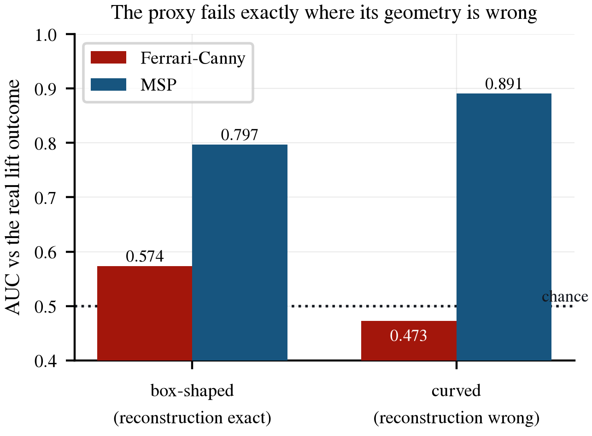
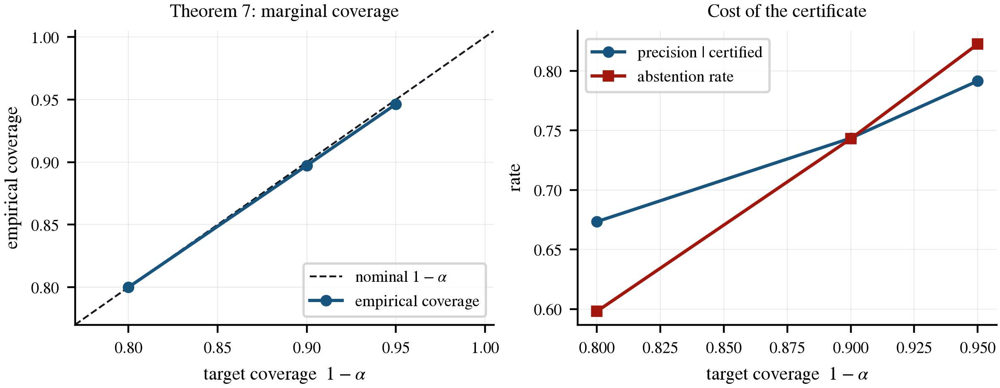
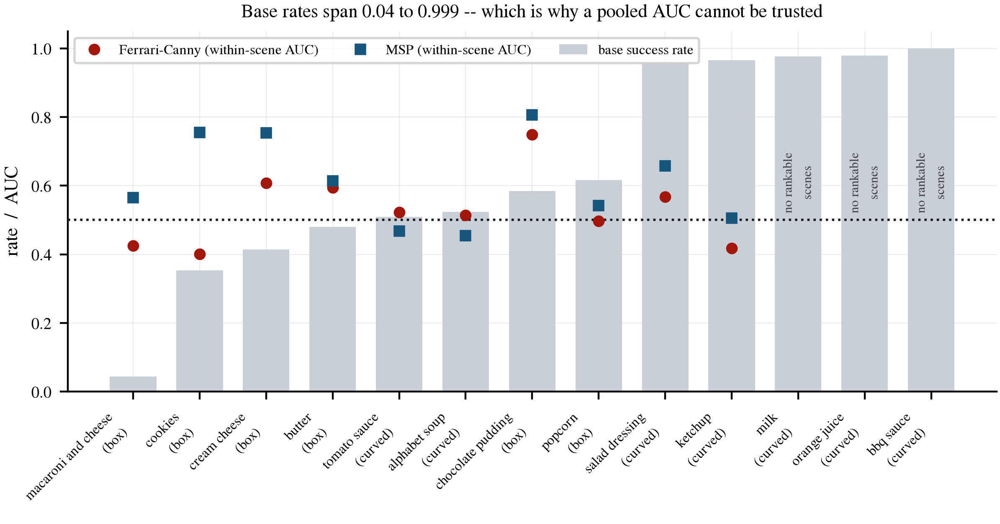
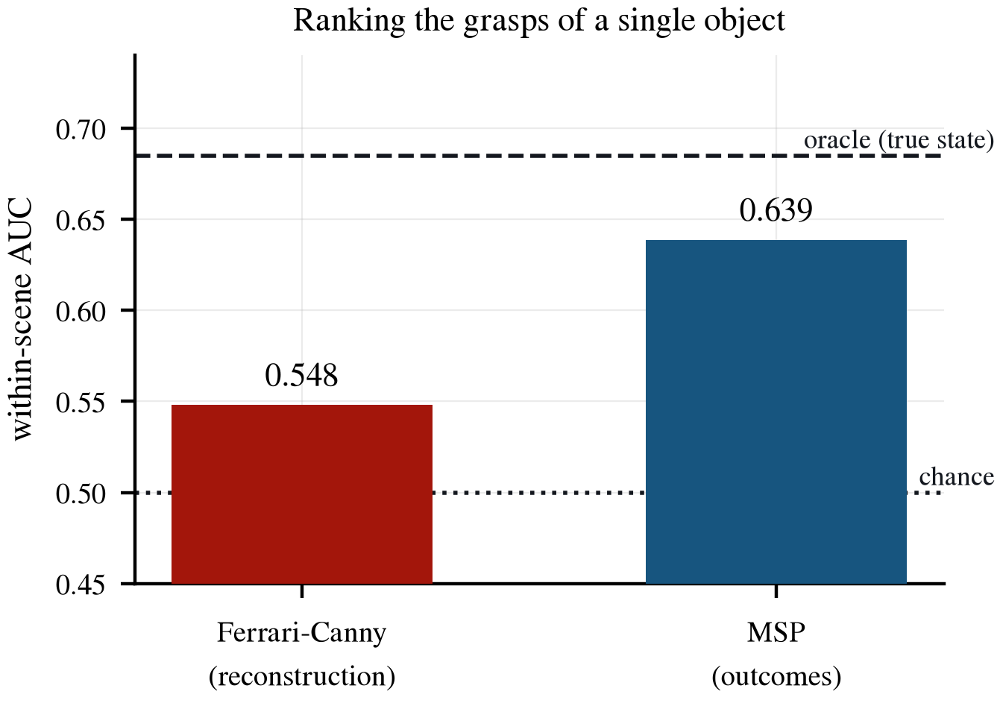

Abstract
A manipulation system on a network edge cannot ship pixels and cannot ship certainty, so the question is what the smallest thing it can ship is. We formulate perception for manipulation as estimating a calibrated belief over the minimal statistic that preserves all and only the information that changes action outcomes, rather than an accurate pose. Two world states are equivalent when every admissible action produces the same outcome distribution; geometry is recoverable only up to that equivalence, and accuracy beyond the sufficiency resolution is both unrecoverable and unnecessary. The formulation is instantiated by two learned modules trained under a variational information bottleneck, and grasp selection, distribution-free abstention, active perception and test-time adaptation all fall out as inference procedures over them: no reconstruction, no dynamics rollout, no reinforcement learning. Measured on 11,979 executable grasps over 13 scanned LIBERO groceries, an analytic grasp score computed on a reconstructed geometry does not predict what actually happens: it reaches within-scene AUC 0.548 against MSP's 0.639, and over the grasps on objects whose reconstruction is genuinely wrong it falls below chance at 0.473 against MSP's 0.891, meaning the grasps it prefers are the ones that fail. The certificate holds on real RGB-D images: empirical coverage 0.897 against a 0.90 target over 16,000 test points, with certified precision 0.744 reported separately because it is a different estimand. The code that carries this costs 0.534 nats per scene, and the rate-distortion frontier shows the outcome the budget purchases falling monotonically as the rate rises.
Four Stages, Two Modules
Everything at deployment is inference over the same two frozen modules. Pick a stage.
What the Theory Buys
Four claims, and the limit of each one stated next to it.
The statement
Under the Markov chain Z–O–X–Y, the data processing inequality bounds what any code can carry. The minimal sufficient statistic is the information-bottleneck optimum in the limit of a large sufficiency budget, so the code that survives compression is exactly the one that changes outcomes.
What follows practically
There is no reconstruction loss and no pose loss anywhere in the objective. The rate is the number of nats the belief costs to transmit, which on the network edge is the quantity that actually bills.
The budget is not uniform across outcome channels. Success, margin and slip have log-likelihoods on incommensurate scales, and putting equal weight on them starves the one channel the decision rule reads. The ablation section shows what that costs: the model stops ranking grasps entirely.
The statement
States are identifiable only up to the kernel of the outcome Jacobian. The predicted subspace is compared against one measured independently, by perturbing the state and recording which directions leave real outcomes unchanged. Where the theorem has content the prediction is essentially exact, with principal angles under one degree.
Where it says nothing
For 6 of 13 objects the Jacobian has full rank and the kernel is trivial: nothing is continuously unidentifiable and the theorem makes no claim at all. That is a real limit on its reach, and the object table below marks it per object rather than reporting an average that hides it.
The statement
Split conformal prediction over a held-out calibration fold gives marginal coverage without any distributional assumption. Actions whose prediction set is the singleton {1} form the certified set; an empty set is an abstention.
The estimand trap
Coverage is Pr(succ in the set) over all test points. Certified precision is Pr(succ = 1 | the action was certified). They are different quantities and reporting the second while claiming the first is the standard way a conformal result gets overclaimed. Both are on this page.
Second views help
Acquiring one more viewpoint cuts ambiguity by 13.8% on average. Choosing which viewpoint, selected on one Monte-Carlo estimate of the information gain and scored on an independent one, adds 2.9 points for 16.7% in total, over 512 scenes and 8 candidate views.
The number we refuse to quote
Selecting and scoring on the same estimate reports 130.8%, of which 114.1 points are the winner's curse. We report the honest estimate and print the inflated one beside it so the size of the selection bias in this kind of experiment is visible.
Most of the benefit is in taking a second view at all rather than in choosing it well, and we say so rather than attributing the whole reduction to the policy.
The Proxy Fails Where Its Geometry Is Wrong
Ferrari-Canny epsilon is computed on an oriented bounding box, roughly the geometry a pose-and-shape pipeline recovers. The outcome is a rigid-body lift against the object's true mesh.

| Predictor | Pooled AUC | Within-scene AUC |
|---|---|---|
| Ferrari-Canny ε on the reconstruction | 0.542 | 0.548 |
| MSP, belief trained on outcomes Ours | 0.876 | 0.639 |
| Chance | 0.500 | 0.500 |
| Oracle: an MLP on the true state | – | 0.685 |
Read the right column. Within-scene AUC ranks the candidate grasps of a single settled pose, so it cannot be won by recognising the object. The pooled column can be: per-object base rates on this corpus span 0.043 to 0.999, and a model that has learned nothing but object identity still scores about 0.72 pooled. The oracle bound matters too: no perception system can beat 0.685 within-scene here, so MSP's 0.639 is against a ceiling, not against 1.0.
When It Commits, Does the Object Come Up?
The system ranks a scene's candidate grasps, executes its favourite, and acts only when confident enough. Sweeping that confidence threshold sweeps the act rate. Drag it.
1,997 scenes with at least one executable grasp. A useful score rises as it grows more selective; the analytic proxy's falls, and only reaches the random-pick control by committing to nearly every scene. It is not mis-calibrated, which a monotone transform would fix. It is uninformative, and on the objects whose geometry it gets wrong it is worse than that.
The Certificate Holds on Images
Split conformal calibration on a held-out fold, evaluated over 16,000 test points on real RGB-D. Pick the risk level.

What the Link Has to Carry
The sufficiency budget β multiplies the relevance term, so a larger β purchases sufficiency at the price of rate. Hover a point for its coverage and abstention.
The purchased outcome is success: Dsucc falls monotonically as the rate rises, from 0.656 at 0.004 nats to 0.412 at 3.29 nats. The unweighted total over all three channels need not, because it is dominated by the margin and slip likelihoods the budget deliberately sacrifices, and reporting only that total would make a working budget look broken. Coverage holds near 0.90 across the whole sweep, so the certificate is not being paid for out of the rate.
0.53 nats per scene is what the belief costs to send
The rate is not a regulariser we chose for convenience: it is the mutual information between the observation and the code, which on a networked manipulator is the payload. A pipeline that ships a reconstructed mesh or a dense pose distribution ships orders of magnitude more, and the evidence above says the extra bits do not change the decision.
At 0.004 nats the certificate still covers 0.896
The lowest-rate point on the sweep holds its coverage target and abstains slightly less than the deployed point. Rate and calibration are close to independent here, which is the property that makes the interface deployable on a constrained link rather than only in a lab.
Thirteen Objects, One Table
Base success rates span 0.043 to 0.999, which is the entire reason a pooled AUC cannot be trusted here. Filter by geometry; click a header to sort.
| Object | Base rate | Ferrari-Canny | MSP | rank J | dim ker J | Max angle ° |
|---|
The two AUC columns are within-scene, averaged over the scenes where the ranking question is well posed, and the three figures above them are macro-means over the objects in view, which is a different aggregation from the corpus-level 0.548 and 0.639 quoted earlier: a scene needs at least three executable grasps and both a success and a failure. An object lifted successfully 99.9% of the time supplies almost none, so it is marked not rankable rather than given an AUC over two or three scenes that would read as a catastrophic failure. The last three columns are the identifiability diagnostic: where the kernel of the outcome Jacobian is non-trivial the predicted unidentifiable subspace matches the independently measured one to under a degree, and where the Jacobian has full rank the theorem makes no claim and the cell is a dash.

What Each Piece Is Worth
Scored on the within-scene axis, because a pooled AUC cannot referee these: a model that has learned nothing but object identity still scores about 0.72 pooled, so every ablation would look harmless.
The dotted line is chance. Response is the standard deviation of the score across a scene's candidate grasps: when it collapses towards zero the model has stopped attending to the action and is emitting one number per scene.
A uniform budget destroys the ranker, and a pooled AUC would hide it
Placing an equal multiplier on outcome channels whose log-likelihoods live on incommensurate scales starves success, the one outcome the decision rule reads. Within-scene AUC falls to 0.511 and the action response collapses to 0.002: the model has stopped ranking grasps entirely. Its pooled AUC is still 0.710, which is why the axis matters.
Replacing the belief with a constant costs everything
With the code ablated the head can only exploit an action prior, and it lands at 0.506 within-scene, chance. This is the control for the reviewer concern that the head could ignore the belief and memorise action priors, and it does not survive.
Evidence Boundaries
What the measurements do not cover, stated rather than left for a reader to discover.
The identifiability theorem is often vacuous
For 6 of 13 objects the outcome Jacobian has full rank and its kernel is trivial, so nothing is continuously unidentifiable and the theorem says nothing at all. Where it does have content the prediction matches an independently measured subspace to under a degree, but the reach is genuinely limited and the per-object table shows it case by case.
Three objects cannot be scored at all
Milk, orange juice and bbq sauce are lifted so reliably that almost no scene contains both a success and a failure, so the within-scene ranking question is not well posed for them. They are marked, not imputed.
The certificate is marginal, not conditional
Coverage holds over the test distribution as a whole. It is not a per-object or per-scene guarantee, and certified precision, the number an operator actually feels, is a different estimand that we report separately rather than in place of it.
Abstention is high at the deployed point
0.743 at α = 0.1. The framework declines on most scenes because a photograph does not contain friction or mass. Active touch is the intended remedy and the equations for it exist, but the touch loop is not wired into the deployed system.
Active perception is evaluated in simulation over 8 views
512 scenes, 8 candidate viewpoints, ambiguity reduction rather than end-to-end success. The honest estimate is 16.7% and most of that, 13.8 points, comes from taking a second view at all rather than from choosing it.
One corpus, one gripper, no real robot
Thirteen scanned LIBERO groceries under a rigid-body lift criterion. Real meshes rather than parametric primitives is what makes the reconstruction-gap experiment possible at all, but nothing here measures sim-to-real transfer of the belief or the certificate.

BibTeX
@misc{sarowar2027msp,
title = {Learning Manipulation-Sufficient Representations via Outcome Bottlenecks},
author = {Md Selim Sarowar and Sungho Kim},
year = {2027},
note = {Under review, IEEE Internet of Things Journal},
url = {https://physical-agi.github.io/MSP-FRAMEWORK/}
}Placeholder entry. It will be replaced with the journal entry once the paper is accepted.